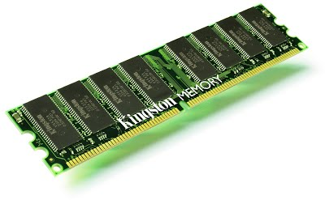

ROM stands for Read-Only Memory. This is also a bit of a misnomer, since many (modern) ROMs can also be written to. ROMs are nonvolatile memory, requiring no power to retain their contents. They are generally slower than RAM, and considerably slower than fast static RAM.
The primary purpose of ROM within a system is to hold the code (and sometimes data) that needs to be present at power-up. Such software is generally known as firmware and contains software to initialize the computer by placing I/O devices into a known state. It may contain either a bootloader program to load an operating system off disk or network or, in the case of an embedded system, it may contain the application itself.
Many microcontrollers contain on-chip ROM, thereby reducing component count and simplifying system design.
Standard ROM is fabricated (in a simplistic sense) from a large array of diodes. The unwritten bit state for a ROM is all 1s, each byte location reading as 0xFF. The process of loading software into a ROM is known as burning the ROM. This term comes from the fact that the programming process is performed by passing a sufficiently large current through the appropriate diodes to “blow them,” or burn them, thereby creating a zero at that bit location. A device known as a ROM burner can accomplish this, or, if the system supports it, the ROM may be programmed in-circuit. This is known as In-System Programming (ISP) or, sometimes, In-Circuit Programming (ICP).
One-Time Programmable (OTP) ROMs, as the name implies, can be burned once only. Computer manufacturers typically use them in systems where the firmware is stable and the product is shipping in bulk to customers. Mask-programmable ROMs are also one-time programmable, but unlike OTPs, they are burned by the chip manufacturer prior to shipping. Like OTPs, they are used once the software is known to be stable and have the advantage of lowering production costs for large shipments.